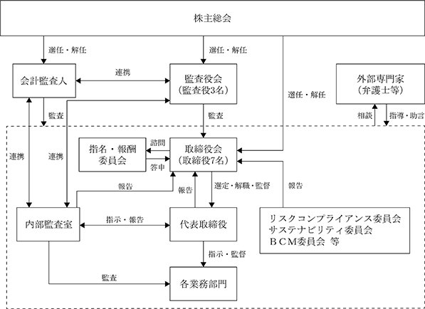

(注) 提出日現在の発行数には、2024年４月１日からこの有価証券報告書提出日までの新株予約権の行使により発行された株式数は、含まれておりません。
※ 当事業年度の末日（2024年１月31日）における内容を記載しております。なお、提出日の前月末（2024年３月31日）現在において、これらの事項に変更はありません。
(注) １．新株予約権１個につき目的となる株式数は、1,200株であります。
なお、新株予約権の割当日後、当社が株式分割（株式無償割当を含む。）又は株式併合を行う場合、次の算式により目的となる株式の数を調整するものとする。ただし、かかる調整は、新株予約権のうち、当該時点で権利行使されていない新株予約権の目的となる株式の数について行われ、調整の結果生じる１株未満の端数については、これを切り捨てる。
また、当社が吸収合併、新設合併、吸収分割、新設分割、株式交換もしくは株式移転を行う場合又はその他やむを得ない事由が生じた場合には、新株予約権の目的となる株式の数は、合理的な範囲で調整されるものとする。
２．当社が株式分割（株式無償割当を含む。）又は株式併合を行う場合、次の算式により行使価額を調整し、１円未満の端数は切り上げる。
また、当社が行使価額を下回る払込金額で募集株式の発行又は自己株式の処分を行う場合(新株予約権の行使に基づく株式の発行・処分を除く)は、次の算式により行使価額を調整し、調整により生じる１円未満の端数は切り上げる。
上記算式において「既発行株式数」とは、当社の発行済株式総数から当社が保有する自己株式数を控除した数とし、自己株式の処分を行う場合には「新規発行」を「自己株式の処分」、「１株当たり払込金額」を「１株当たり処分金額」と読み替えるものとする。
さらに、上記のほか、当社が吸収合併、新設合併、吸収分割、新設分割、株式交換もしくは株式移転を行う場合又はその他やむを得ない事由が生じた場合には、行使価額は、合理的な範囲で調整されるものとする。
３．新株予約権の行使条件は以下のとおりであります。
①新株予約権の割当を受けた者（以下「新株予約権者」という。）は、権利行使時においても、当社又は当社子会社の取締役、監査役、従業員その他これに準ずる地位を有していなければならない。ただし、新株予約権者が任期満了により退任又は定年退職した場合、あるいは取締役会が正当な理由があると認めた場合は、この限りではない。
②新株予約権者が死亡した場合、その相続人による新株予約権の権利行使は認めないものとする。
４．組織再編成行為に伴う新株予約権の交付に関する事項は次のとおりであります。
当社が合併（当社が合併により消滅する場合に限る。）、吸収分割、新設分割、株式交換又は株式移転（以上を総称して以下「組織再編行為」という。）をする場合において、組織再編行為の効力発生日において残存する新株予約権（以下「残存新株予約権」という。）の新株予約権者に対し、それぞれの場合につき、会社法第236条第1項第8号のイからホまでに掲げる株式会社（以下「再編対象会社」という。）の新株予約権を以下の条件に基づきそれぞれ交付することとする。この場合においては、残存新株予約権は消滅し、再編対象会社は新株予約権を新たに発行するものとする。ただし、以下の条件に沿って再編対象会社の新株予約権を交付する旨を、吸収合併契約、新設合併契約、吸収分割契約、新設分割計画、株式交換契約又は株式移転計画において定めた場合に限るものとする。
①交付する再編対象会社の新株予約権の数
組織再編行為の効力発生の時点において残存する募集新株予約権の新株予約権者が保有する新株予約権の数と同一の数をそれぞれ交付するものとする。
②新株予約権の目的である再編対象会社の株式の種類
再編対象会社の普通株式とする。
③新株予約権の目的である再編対象会社の株式の数
組織再編行為の条件等を勘案の上、上記１．に準じて決定する。
④新株予約権の行使に際して出資される財産の価額
交付される各新株予約権の行使に際して出資される財産の価額は、組織再編行為の条件等を勘案の上、上記２．で定められた行使価額を調整して得られる再編後払込金額に上記③に従って決定される当該新株予約権の目的である再編対象会社の株式の数を乗じて得られる金額とする。
⑤新株予約権を行使することができる期間
2017年10月１日と組織再編行為の効力発生日のうち、いずれか遅い日から2025年８月31日までとする。
⑥新株予約権の行使の条件
上記３．に準じて決定する。
⑦増加する資本金及び資本準備金に関する事項
現在の発行内容に準じて決定する。
⑧譲渡による新株予約権の取得の制限
譲渡による新株予約権の取得については、再編対象会社の承認を要するものとする。
⑨新株予約権の取得事由
現在の発行内容に準じて決定する。
該当事項はありません。
③ 【その他の新株予約権等の状況】
該当事項はありません。
(注)１．新株予約権（ストックオプション）の権利行使による増加であります。
2024年１月31日現在
(注) １．自己株式 85,565株は、「個人その他」に855単元、「単元未満株式の状況」に65株含まれております。
2024年１月31日現在
(注)１．上記の所有株式数のうち、信託業務に係る株式数は、次のとおりであります。
２．前事業年度末において主要株主であった齋藤晶議（戸籍名：齊藤章浩）は、当事業年度末では主要株主ではなくなりました。
2024年１月31日現在
2024年１月31日現在
該当事項はありません。
(注) 当期間における取得自己株式には、2024年４月１日から有価証券報告書提出日までの単元未満株式の買取りによる株式数は含めておりません。
(注) 当期間における保有自己株式数には、2024年４月１日から有価証券報告書提出日までの単元未満株式の買取りによる株式数は含めておりません。
当社は、長期にわたる安定的な経営基盤の確保や将来の事業拡大のために必要な内部留保の充実を図りつつ、経営成績に応じた利益還元を行うことを基本方針としております。具体的には配当性向30%以上を目標とし、今後の事業環境を勘案しつつ決定いたします。
当社は、年１回の剰余金の配当を期末に行うことを基本としており、配当の決定機関は株主総会であります。なお、当社は、会社法第454条第５項の規定に基づき、取締役会の決議によって中間配当を行うことができる旨を定款に定めております。
当事業年度の剰余金の配当につきましては、上記基本方針に基づき、１株当たり23.0円としております。
（注）基準日が当事業年度に属する剰余金の配当は、以下のとおりであります。
① コーポレート・ガバナンスに関する基本的な考え方
当社は、「リアルなＩＴコミュニケーションで豊かな社会形成に貢献する」ことを経営理念とし、一部の先進企業だけでなく、すべての企業にすぐれたＩＴのメリットを提供することを目指しております。この経営理念を効果的、効率的に実現することができるガバナンス体制の構築に努めてまいります。
具体的には、この経営理念のもと、取締役及び全従業員が法令・定款を遵守し、健全な社会規範のもとにその職務を遂行し、経営理念の実現を通じて、株主、取引先、従業員等のステークホルダーの期待と信頼に応え継続的に企業価値を向上させるため、経営の健全性・効率性及び透明性を確保すべく、最適な経営管理体制の構築に努めております。
② 企業統治の体制の概要及び当該体制を採用する理由
当社は取締役７名（うち社外取締役３名）による迅速な意思決定と取締役会の活性化を図るとともに、監査役（うち社外監査役２名）による業務執行の客観的・中立的な監査のもと経営の公正性と透明性を維持することで、効率的な経営システムと経営監視機能が十分に機能するよう以下の体制を採用しております。
当社の提出日現在における企業統制の体制の模式図は以下のとおりであります。

a.取締役会
取締役会は、取締役７名（うち社外取締役３名）で構成されており、代表取締役齋藤晶議が議長を務めております。構成員については「(2)役員の状況」に記載のとおりであります。取締役会は、経営方針等の経営に関する重要事項並びに法令で定められた事項を決定するとともに業務執行状況の監督を行っております。取締役会は、原則として月１回定期的に開催するとともに、必要に応じて随時開催し、経営意思決定の迅速化を図っております。
b.監査役会・監査役
当社は監査役制度を採用しており、監査役会は、監査役３名（うち社外監査役２名）で構成され、そのうち１名は常勤監査役であります。また、社外監査役２名のうち１名は弁護士１名であります。構成員については「(2)役員の状況」に記載のとおりであります。監査役会は原則として月１回開催し、監査状況の確認及び協議を行うほか内部監査室や会計監査人とも連携し、随時監査についての報告を求めております。監査役は、取締役会に出席し、取締役の意見聴取や資料の閲覧等を通じて業務監査、会計監査を実施しております。また、常勤監査役においては、取締役会以外の重要な会議にも出席し、取締役の業務執行状況を十分に監査できる体制となっております。
c.任意の指名・報酬委員会
当社の取締役会の任意の諮問機関として、代表取締役社長齋藤晶議及び社外取締役２名（松本滋彦氏、尾崎博史氏）で構成される指名・報酬委員会を設置しております。指名・報酬委員会は、取締役会からの諮問を受けて取締役の選任・解任や取締役の報酬に係る手続きの透明性と客観性を高める体制を構築しております。当委員会の委員長は社外取締役の松本滋彦氏であります。
d.内部監査室
当社は、代表取締役の直属の組織として内部監査室を設置しており、４名（兼務４名）が各部門の法令の遵守状況及び業務活動の効率性などについて、内部監査を実施し、代表取締役に監査結果を報告するとともに被監査部門に対して業務改善に向け具体的に助言・勧告を行っております。また、定期的に直接取締役会へ報告を行うことにより、内部監査の実効性を確保しております。この他、内部監査室は、監査役、会計監査人と適宜情報交換会等を実施し、監査に関する情報の共有を図っております。
e.リスクコンプライアンス委員会
当社は、常勤取締役を統括責任者とするリスクコンプライアンス委員会を設置しております。現在の統括責任者は、取締役常盤誠であり、当該委員会は統括責任者の他、各部門から選出された従業員13名（事務局含む）で構成されております。リスクコンプライアンス委員会は、全社的なコンプライアンス体制の強化・推進、事業の継続安定的な発展の確保などを目的として原則として年２回以上開催され（2024年１月期の開催回数６回）、コンプライアンス上の問題点の把握、共有、対応策の協議・検討、その他社内に対し啓蒙活動を実施しております。また、事業運営上の様々なリスクの抽出、評価、対策等に関し協議・検討を行っております。リスクコンプライアンス委員会は協議・検討結果を取締役会に報告しております。
f. サステナビリティ委員会
当社は、常勤取締役を統括責任者とするサステナビリティ委員会を設置しております。現在の統括責任者は、取締役青木常子であり、当該委員会は統括責任者の他、従業員11名で構成されております。サステナビリティ委員会は、サステナビリティに関する取組みを推進することを目的として、必要に応じて随時開催され（2024年１月期の開催回数3回）、基本方針の策定、マテリアリティの特定及び見直し、重要テーマの設定及び見直し、取組の進捗モニタリング及び推進、社内外への情報開示等を実施しております。サステナビリティ委員会は定期的に（年１回以上）活動状況について取締役会に報告しております。
③ 企業統治に関するその他の事項
a. 内部統制システムの整備の状況
当社の内部統制システムといたしましては、取締役会において「内部統制システム構築の基本方針」を定め、業務の有効性及び適正性を確保する体制を構築しております。また、当方針で定めた内容を実現するために整備された諸規程を必要に応じて見直すとともに、内部監査により所定の内部統制が有効に機能しているかを定期的に検証し、継続的にその改善・強化に努めております。
「内部統制システム構築の基本方針」の概要は以下のとおりであります。
イ．取締役、使用人の職務の執行が法令及び定款に適合することを確保するための体制
ⅰ. 取締役会は、牽制機能の強化を期待して社外取締役を含む取締役で構成し、取締役会規則に基づき法令等に定める重要事項の決定を行うとともに取締役等の適正な職務執行が図れるよう監督する。
ⅱ. 監査役は法令に定める権限を行使し、取締役の職務の執行を監査する。
ⅲ. 使用人の職務の効率性と適切な執行を確保するために定めた職務分掌と決裁権限の遵守を徹底するよう社内教育を実施する。また、定期的な内部監査を実施してコンプライアンスの状況を確認するとともに、コンプライアンスの重要性についての社内啓蒙を実施する。
ロ．取締役の職務の執行に係る情報の保存及び管理に関する体制
ⅰ. 取締役の職務執行に関する情報は、法令及び社内規程である文書管理規程、情報セキュリティに関する規程等に基づき、文書もしくは電子ファイルにより適切に記録、保存、保管する。
ⅱ. 取締役及び監査役がこれらの文書等を必要に応じて閲覧できるものとする。
ハ．損失の危険の管理に関する規程その他の体制
ⅰ. 当社が認識するリスクを適切に管理し危険を防止するため「内部監査規程」に基づき内部監査担当が内部監査を実施し、対応が必要なリスク要因について適時に代表取締役に報告する。
ⅱ. 取締役会は、リスクを低減させるため社内規程の整備その他の対応を行い、また、不測の事態が発生した場合には、迅速かつ組織的な対応により被害を最小限度に抑えるための体制を整える。
二．取締役の職務の執行が効率的に行われることを確保するための体制
ⅰ. 当社は、業務分掌規程及び決裁権限基準により、職務分掌及び職務権限・責任を明確にするとともに、取締役会規則、稟議規程等によって意思決定のルールを整備し、適正かつ効率的に業務が遂行される体制を整備する。
ⅱ. 取締役会を毎月１回開催するほか、必要に応じて適宜開催する。
ⅲ. 中期経営計画及び年度予算を設定し、実績との比較を実施することによって業務の実績管理を行う。
ホ．当社及び子会社からなる企業集団における業務の適正を確保するための体制
ⅰ. 取締役会は「関係会社管理規程」に基づき、当社またはグループ会社における内部統制の構築を目指し、情報の共有化、支持・要請の伝達等が効率的に行われる体制を整備する。
ⅱ. グループ会社に取締役または監査役を派遣し、当社グループ全体のリスクの抑止を図る体制を整備する。
へ．監査役がその職務を補助すべき使用人を置くことを求めた場合における当該使用人に関する体制及び当該使用人の取締役からの独立性に関する事項
ⅰ. 監査役の求めに応じ、監査役の職務を補助すべき使用人を配置する。
ⅱ. 監査役の職務を補助すべき使用人は、監査役の指示に基づく職務に関して、取締役の指揮命令から独立してこれを遂行する。
ⅲ. 監査役の職務を補助すべき使用人の人事異動及び評価については、監査役の同意を得て実施する。
ト．取締役及び使用人が監査役に報告するための体制その他の監査役への報告に関する体制
ⅰ. 取締役及び使用人は、監査役または監査役会に対し、以下の事項について報告する。
ア．経営状況に関わる重要な事項
イ．会社に著しい損害を及ぼすおそれのある事項
ウ．内部監査状況及びリスク管理に関する重要な事項
エ．コンプライアンス上重要な事項
オ．当社の内部統制システム構築に関わる活動状況
カ．その他、監査役会で定める事項
ⅱ. 監査役は、その判断に基づき、取締役及び使用人から、業務の執行状況を直接聴取する。
ⅲ. 常勤監査役は取締役会のほか、その他の重要な会議に出席し、必要に応じて取締役または使用人に対し書類の提出や説明を求めるものとする。
ⅳ. 前各号の報告を行った者は、当該報告を理由に不利益な取り扱いを受けない。
チ．その他監査役の監査が実効的に行われることを確保するための体制
ⅰ. 監査役は内部監査担当者との定期的な情報交換を行うとともに、代表取締役社長、及び監査法人と必要に応じて意見交換会を開催する。
ⅱ. 監査役は、必要に応じて、独自に弁護士、公認会計士等を雇用し、監査業務に関する助言を得ることができる。
ⅲ. 監査役の職務の執行について生ずる費用または債務の処理については、経理規程に基づく社内手続により適正に処理する。
リ．反社会的勢力排除に向けた基本的な考え方及びその整備状況
ⅰ. 反社会的勢力に対しては、毅然とした態度で臨むとともに、一切の関係を遮断する。
ⅱ. 取引先が反社会的勢力と関わる個人、企業、団体等であることが判明した場合には取引を解消する。
ⅲ. 管理部を反社会的勢力対応部署と位置づけ、情報の一元管理・蓄積を図るとともに、都道府県暴力追放運動推進センター等外部専門機関との連携、情報収集を図れる体制を整備する。
b. リスク管理体制の整備の状況
当社のリスク管理体制は、法令はもとより、社内規程、企業倫理、社会規範を遵守尊重することを基本とし、コンプライアンス規程及びリスク管理規程を制定することにより運用を行っております。また、監査役監査、内部監査により社内規程の遵守状況を確認し、発見された潜在的な問題に対しては社内体制の整備・強化を図っております。
このほか、常勤取締役を統括責任者とする社内規程に基づくコンプライアンス委員会及びリスクマネジメント委員会をリスクコンプライアンス委員会として設置し、法令遵守意識を取締役及び使用人に浸透させるため、定期的に教育研修を実施するとともに、使用人が察知した法令違反行為について、コンプライアンス統括責任者・監査役、外部の弁護士等に直接通報可能な内部通報制度を導入し、法令遵守を実効性あるものとしております。
c. 取締役の員数
当社の取締役は８名以内とする旨定款に定めております。
d. 責任限定契約の内容の概要
当社と取締役（業務執行取締役等であるものを除く）及び監査役は、会社法第427条第１項の規定に基づき、同法第423条第１項の損害賠償責任を限定する契約を締結しております。当該契約に基づく損害賠償責任の限度額は、金100万円又は法令の定める最低責任限度額とのいずれか高い額としております。
e. 役員賠償責任保険契約の内容の概要
当社は、当社および子会社の取締役、監査役、執行役員及び管理職従業員を被保険者として、会社法第430条の３第１項に規定する役員等賠償責任保険契約を保険会社との間で締結し、保険料は全額会社が負担しております。当該保険契約は、被保険者が会社の役員の地位に基づき行った行為（不作為を含みます）に起因して損害賠償請求を受けた場合に被保険者が被る損害賠償金や訴訟費用等を補填するものです。
ただし、被保険者の職務の執行の適正性が損なわれないようにするため、被保険者が利益または便宜の提供を違法に得た場合や犯罪行為または法令違反行為であることを認識して行った場合には塡補の対象としないこととしております。
f. 取締役の選任決議要件
当社は取締役の選任決議について、議決権を行使することができる株主の議決権の３分の１以上を有する株主が出席し、その議決権の過半数をもって行う旨及び累積投票によらない旨を定款で定めております。
g. 株主総会の特別決議要件
当社は、会社法第309条第２項の定めによる株主総会の特別決議要件について、議決権を行使することができる株主の議決権の３分の１以上を有する株主が出席し、その議決権の３分の２以上をもって行う旨を定款で定めております。これは、株主総会における特別決議要件を緩和することにより、円滑な株主総会の運営を行うことを目的とするものであります。
h. 株主総会決議事項を取締役会で決議することができる事項
イ．中間配当
当社は、会社法第454条第５項に定める中間配当の事項について、取締役会の決議によって、毎年７月31日を基準日として中間配当をすることができる旨を定款に定めております。これは、中間配当を取締役会の権限とすることにより、株主への機動的な利益還元を行うことを目的とするものであります。
ロ．自己株式の取得
当社は、会社法第165条第２項に基づき、自己の株式の取得について、経済情勢の変化に対応して財務政策等の経営諸施策を機動的に遂行することを可能とするため、取締役会の決議によって市場取引等により自己の株式を取得することができる旨を定款で定めております。
ハ．取締役及び監査役の責任免除
当社では、会社法第426条第１項に基づき、取締役及び監査役が期待される役割を十分に発揮できるよう、取締役会の決議をもって、取締役（取締役であった者を含む）及び監査役（監査役であった者を含む）の損害賠償責任を法令の限度において、免除することができる旨を定款に定めております。
④ 取締役会の活動状況
当事業年度において当社は取締役会を17回開催しており、各取締役の出席状況は以下の通りです。
（注）岩崎俊男氏は、2023年４月26日開催の第31回定時株主総会において新たに選任されましたので、当事業年度の出席状況は就任後の回数を記載しております。なお、岩崎俊男氏は、上記定時株主総会終結時まで監査役であったため、上記の他、監査役として取締役会に４回出席しております。
取締役会においては、法令や定款で定める事項のほか、主に中期経営計画、年度予算、決算開示、資本政策、一定額以上の投資案件、組織人事に関する事項、IR活動に関する事項等について審議しております。また、月次の実績及び事業状況や内部監査に関する事項等について報告を行っております。
⑤ 任意の指名・報酬委員会の活動状況
当事業年度において当社は任意の指名・報酬委員会を４回開催しており、各委員の出席状況は以下の通りです。
任意の指名・報酬委員会においては、主に、取締役の個人別の報酬等の内容に係る決定方針、取締役の個人別報酬額、取締役候補者の選任、取締役の役職等に関する取締役会からの諮問に対し審議し、取締役会に答申しております。
① 役員一覧
男性
(注) １．取締役尾崎博史氏、松本滋彦氏、岩崎俊男氏は、社外取締役であります。
２．監査役梅園雅彦氏、兼松由理子氏は、社外監査役であります。
３．取締役の任期は、2023年１月期に係る定時株主総会終結の時から2025年１月期に係る定時株主総会終結の時までであります。
４．監査役の任期は、2023年１月期に係る定時株主総会終結の時から2027年１月期に係る定時株主総会終結の時までであります。
５．取締役に期待する分野（スキルマトリックス）は次のとおりであります。
６．当社は、法令に定める監査役の員数を欠くことになる場合に備え、会社法第329条第３項に定める補欠監査役を選任しております。補欠監査役の略歴は次のとおりであります。
② 社外役員の状況
当社の社外取締役は３名、社外監査役は２名であります。
当社は、東京証券取引所の独立役員の独立性に関する事項等を参考にして、社外役員の独立性判断基準を定めております。当社は社外取締役全員及び社外監査役全員を、独立性が高く一般株主と利益相反取引の恐れがないことから同取引所の定めに基づく独立役員として指定し、同取引所に届け出ております。
社外取締役尾崎博史氏は、税理士としての多くの法人顧客に関与してきた豊富な経験と高い見識を有しております。当社は、同氏がこれらの経験と見識を活かして、当社の業務執行の監督を行うのに適任であると判断しております。なお、尾崎博史氏が代表を務める駿河台税理士法人と当社はクラウドサービスの取引がありますが、その取引金額は僅少（年間10万円未満）であり、社外取締役の独立性に影響を及ぼすものではないと判断しております。また、同氏は、当社との間で人的関係、資本的関係、その他重要な利害関係はありません。
社外取締役松本滋彦氏は、金融機関において幅広く法人業務に携わるとともに、システム開発等を行う事業会社の経営に携わったことによる豊富な経験と高い見識を有しております。当社は、同氏がこれらの経験と見識を活かして、当社の業務執行の監督を行うのに適任であると判断しております。なお、同氏は、当社との間で人的関係、資本的関係、取引関係その他重要な利害関係はありません。
社外取締役岩崎俊男氏は、金融機関における長年の経験及び経営者としての高い見識と豊富な経験を有しております。当社は、同氏がこれらの経験と見識を活かして、当社の業務執行の監督を行うのに適任であると判断しております。なお、同氏は、当社との間で人的関係、資本的関係、取引関係その他重要な利害関係はありません。
社外監査役梅園雅彦氏は、金融機関における長年の経験及び経営者としての高い見識と豊富な経験、財務及び会計に関する相当の知見を有しております。当社は、同氏がこれらの経験と見識を活かして、取締役の職務執行の監査を行うのに適任であると判断しております。なお、同氏は、当社との間で人的関係、資本的関係、取引関係その他重要な利害関係はありません。
社外監査役兼松由理子氏は、弁護士として法務に関する専門知識と豊富な経験を有しております。当社は、同氏がこれらの経験と見識を活かして、取締役の職務執行の監査を行うのに適任であると判断しております。なお、同氏は、当社との間で人的関係、資本的関係、取引関係その他重要な利害関係はありません。
③ 社外取締役又は社外監査役による監督又は監査と内部監査、監査役監査及び会計監査との相互連携並びに内部統制部門との関係
社外取締役及び社外監査役は共に取締役会に出席しており、取締役会における内部監査・会計監査・内部統制に関する決議・報告・審議に参加し、監督又は監査をしております。
また、社外監査役は、監査役会に出席し、常勤監査役から内部監査の状況、重要な会議の内容について報告を受ける等、常勤監査役との意思疎通を図って連携しております。また、会計監査人からは監査計画の説明を受け、定期的な会合を持ち、監査上の重要論点や重要な発見事項等について意見交換を行っております。
(3) 【監査の状況】
① 監査役監査の状況
当社の監査役監査は、３名の監査役（常勤監査役１名、非常勤監査役（社外監査役）２名）で構成されております。非常勤監査役（社外）梅園雅彦氏は、金融機関における長年の経験があり、財務及び会計に関する相当の知見を有しております。
当事業年度において当社は、監査役会を原則として月１回開催しており、個々の監査役の出席状況については次のとおりであります。
（注）１．小林雅弘氏、兼松由理子氏は、2023年４月27日開催の定時株主総会で新たに監査役に選任されましたので、当事業年度の出席状況は就任後の出席状況を記載しております。
２．梅園雅彦氏は、2023年４月27日開催の定時株主総会後の監査役会の決議により、常勤監査役から非常勤監査役に変更となっております。
３．藤井正夫氏、岩崎俊男氏は、2023年４月27日開催の定時株主総会終結の時をもって、任期満了により監査役を退任したため、退任前の出席状況を記載しております。
監査役会における主な検討事項は、監査方針、監査計画の策定、会計監査人の評価や報酬等の同意、内部監査の実施状況、内部統制システムの整備・運用状況、取締役の職務執行の法令及び定款への遵守状況等であり、これらについて決議、協議等を行っております。
常勤監査役は、監査役会で定められた監査方針、監査計画に基づき、取締役との意見交換、取締役会その他の重要な会議への出席、重要な決裁書類等の閲覧、内部監査室および会計監査人との情報交換などを実施し、収集した情報等を、適宜、非常勤監査役と共有しております。
② 内部監査の状況
内部監査につきましては、社長直轄の部署である内部監査室を設置し、４名（兼務４名）が内部監査業務を遂行しております。内部監査室は、当社の業務部門の監査を、内部監査規程及び年度計画に基づいて行い、会社の業務運営が法令、社内規程、経営方針等に従って、適切かつ有効に執行されているかを監査しております。そして、監査の結果報告を取締役会、代表取締役、監査役等に行うとともに、各部門へ業務改善案等の助言、フォローアップを行っております。
③ 会計監査の状況
a. 監査法人の名称
有限責任 あずさ監査法人
11年間
指定有限責任社員 業務執行社員 鈴木 専行 氏
指定有限責任社員 業務執行社員 瀧浦 晶平 氏
当社の会計監査業務に係る補助者は、公認会計士４名、会計士試験合格者等５名、その他６名であります。
監査役会は、監査法人の品質管理水準、監査チームの独立性・専門性、監査報酬の水準・内容、監査役・経営者とのコミュニケーション状況、不正リスクへの備え等を評価し、再任の適否を検討しております。上記の検討の結果、引き続き有限責任あずさ監査法人を適任と判断いたしました。
当社は、会計監査人が、会社法第340条第１項各号に該当するものと判断される場合、監査役会で審議し監査役全員の同意によって監査役会が会計監査人を解任する方針であります。
会計監査人を解任した場合は、監査役会で選定した監査役がその旨及び理由を解任後最初に開催する株主総会において報告する方針であります。また、監査役会は、会計監査人の職務の遂行に関する状況等を勘案し、必要があると判断した場合には、当該会計監査人の解任または再任しないことに関する議案の内容を決定いたします。
当社の監査役会は、公益社団法人日本監査役協会会計委員会が策定した「会計監査人の評価及び選定基準策定に関する監査役等の実務指針」を踏まえ、外部会計監査人を適切に選定し評価するための「会計監査人の監査の相当性判断に関するチェックリスト」を作成しております。当該チェックリストに基づき、毎期各監査役が会計監査人の相当性判断を行い、監査役会において監査役全員で評価し、その結果を取締役会にて報告しております。この結果、現時点において会計監査人の解任または不再任とすべき事由はないと判断いたしました。
当連結会計年度における提出会社の非監査業務の内容は、ISMAP事前診断業務の委託によるものであります。
該当事項はありません。
該当事項はありません。
監査報酬の決定方針については特に定めておりませんが、会計監査人より提示された監査計画及び監査報酬見積額が、当社の事業内容や事業規模、前年度の監査実績等に照らし適正であるかどうか総合的に検討し、監査役会の同意を得て決定しております。
ｅ. 監査役会が会計監査人の報酬等に同意した理由
監査役会は、監査計画における監査内容・監査日数・配員体制、報酬見積りの計算根拠、会計監査人の職務遂行状況などを勘案し、検討した結果、当事業年度の会計監査人の報酬等の額について同意の決議をいたしました。
(4) 【役員の報酬等】
① 役員の報酬等の額又はその算定方法の決定に関する方針に係る事項
イ 基本方針について
当社は、取締役の個人別の報酬等の内容に係る決定方針を、2022年２月25日開催の取締役会で決議し、2023年４月27日開催の取締役会の決議により改定しております。当該方針の概要は以下のとおりであります。
（基本方針）
当社の取締役の報酬は、「ICTの力ですべての働く人を支える」という当社のビジョンの実現及び「リアルなITコミュニケーションで豊かな社会形成に貢献する」という経営理念を実現することで、中長期的にわたる企業価値の向上を図ることを重視した報酬体系とする。
報酬の内訳は、基本報酬及び非金銭報酬で構成するものとし、監督機能を担う社外取締役については、その職責を鑑みて、基本報酬のみとする。
（個人別の報酬等の額に関する方針）
当社の取締役の基本報酬は、月例の金銭による固定報酬とし、役位、職責、ビジョン実現、経営理念の実現、中長期的な当社業績への貢献度、従業員給与の水準等を考慮要素として総合的に勘案して決定する。
非金銭報酬は、当社の中長期的な企業価値向上及び株主価値の持続的な向上を図るインセンティブを与えるとともに、業績に対するコミットメントを持たせることを目的とした業績条件型譲渡制限付株式とする。業績条件型譲渡制限付株式は、当社取締役会において決定する事業年度に関して当社取締役会が定める業績目標を達成したことを条件として、譲渡制限期間が満了した時点において譲渡制限を解除するものとする。なお、対象取締役への具体的な支給時期及び配分については、対象取締役の貢献度等諸般の事項を総合的に勘案して決定するものとする。
ロ 報酬体系
当社役員の現在の報酬体系は、役割や責任に相応しい水準の「固定報酬」及び、当社の中長期的な企業価値向上及び株主価値の持続的な向上を図るインセンティブを与えるとともに、業績に対するコミットメントを持たせることを目的とした業績条件型譲渡制限付株式（非金銭報酬）で構成されております。なお、監督機能を担う社外取締役及び取締役の職務執行の監査機能を担う監査役については、その職責を鑑みて「固定報酬」のみとしております。
ハ 報酬決定プロセス
当事業年度における当社取締役の報酬等の額の決定過程における取締役会の活動は、代表取締役社長齋藤晶議が作成した取締役の個人別報酬額が個人別の報酬等の額に関する方針に基づく内容となっているかにつき、当社の取締役会から指名・報酬委員会に対し諮問し、同委員会からの答申内容を踏まえ、2023年4月27日開催の取締役会において、指名・報酬委員会が同意した金額とすることにつき承認いたしました。
また、監査役の報酬等につきましては、監査報酬総額の範囲内において、常勤、非常勤の別、業務分担の状況等を考慮して、監査役会で決定しております。
二 役員の報酬等に関する株主総会の決議について
当社の取締役の報酬等の限度額は、2004年４月28日開催の臨時株主総会において年額200,000千円以内（定款に定める取締役の員数は８名以内）、監査役の報酬等の限度額は年額30,000千円以内（定款に定める監査役の員数は３名以上）と決議しております。
また、上記の取締役の報酬額とは別枠で、2023年４月27日開催の第31回定時株主総会において、取締役（社外取締役を除く。）を対象に、業績条件型譲渡制限付株式の付与のための報酬として年額30,000千円以内と決議されております。決議当時の取締役は６名（うち社外取締役２名）であります。
② 役員区分ごとの報酬等の総額、報酬等の種類別の総額及び対象となる役員の員数
(注)１．上記には、2023年４月27日開催の第31回定時株主総会の終結の時をもって退任した社外監査役２名を含んでおります。なお、岩崎俊男氏は、第31回定時株主総会において監査役（社外）を退任した後、取締役（社外）に就任しておりますが、社外役員の対象となる役員の員数は１名として取り扱っております。
③ 取締役の個人別の報酬等の決定に係る委任に関する事項
取締役会は、各取締役の職責や業務執行状況及び会社業績等を俯瞰しつつ各取締役の評価を行うには代表取締役社長齋藤晶議が最適と判断し、個人別の報酬等の内容の決定を同氏に委任しております。当該委任における権限の内容は、株主総会で決定された限度額の範囲内で、「個人別の報酬等の額に関する方針」に基づき各取締役の個人別の報酬を決定することであります。
なお、当該権限が適切に行使されるようにするため、取締役会は代表取締役社長齋藤晶議が作成した取締役個人別の報酬の原案が「個人別の報酬等の額に関する方針」に基づくものとなっているかにつき、構成員の過半数が社外取締役で構成される指名・報酬委員会に諮問し、同委員会からの答申により同委員会の同意が得られたことを確認のうえ、取締役会で各取締役の個人別報酬額を決議することとしております。
④ 提出会社の役員ごとの報酬等の総額等
報酬等の総額が１億円以上である者が存在しないため、記載しておりません。
⑤ 使用人兼務役員の使用人給与のうち重要なもの
該当事項はありません。
(5) 【株式の保有状況】
当社は、保有目的が純投資目的である投資株式と純投資目的以外の目的である投資株式の区分について、株式の価値の変動または株式に係る配当によって利益を受けることを目的として保有する株式を純投資目的である投資株式とし、それ以外の株式を純投資目的以外の目的である投資株式に区分しております。
当社が保有している純投資目的以外の目的である投資株式は非上場株式のみであるため、記載を省略しております。
該当事項はありません。
該当事項はありません。
特定投資株式
該当事項はありません。
みなし保有株式
該当事項はありません。
該当事項はありません。
該当事項はありません。
該当事項はありません。